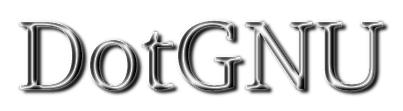
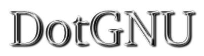

Follow this link for a table of contents.
Follow this link for a version of this page with improved navigation for graphical browsers. 


The DotGNU Project
DotGNU, a FreeDevelopers
Project is really a meta-project that will consist of between ten and
twenty subprojects.
The main components of DotGNU are the DotGNU
Platform and the DotGNU Virtual Identities
system.
DotGNU will be a complete replacement for the .NET strategy - it will
not be a Free Software implementation of .NET. While .NET has some
very sound ideas, problems arise with its implementation, especially
with the Authentication/Authorization systems which are centralized to
Microsoft, and with Microsoft's vision for
"web services". DotGNU will use a
decentralized paradigm: No single company, server or entity will
control authorization. Secondly DotGNU will emphasize security, it
will use encryption wherever possible to keep user data secure and
hidden. (According to the article
Risks of the Passport
Single Signon Protocol, Microsoft's approach has some problems in
the area of security.)
Volunteers wanted
- Protect DotGNU from Microsoft patents by "inventing"
- Start helping with C# library coding and DotGNU documentation
- Design and implement "DotGNU system libraries" that support
journaling and roll-back of database transactions.
- Implementing the JVM for DotGNU.
- Adapt GCC to so that it can, from all its supported
languages, generate portable executables for the DotGNU platform. We
have found that it is extremely difficult to adapt gcc to generating
code for stack-based VMs. So maybe the way to go is invent a new
(more register-based) virtual machine, and add support for it to
the DotGNU platform.
Don't read unpublished Microsoft information
In order to avoid falling into any legal traps, please be extremely
careful to avoid reading any unpublished information from Microsoft.
We ask every contributor to disclose exactly how much exposure they've
had to Microsoft stuff, and make them commit to report any additional
exposure immediately. Whenever there is even the slightest shade of a
possible problem, the contributor needs to refrain from contributing
until the our legal team has been established and it has provided
appropriate advice.
DotGNU technical specifications
We have started working on technical specifications for the DotGNU
system. So far the following documents are available:
Subscribe to the mailing lists
For a quick introduction to some key points that have been discussed,
please refer to the messages referred in this
summary post by Antonio Ognio.
(Such summary posts are definitely worthwhile, and the maintainer of
this page is very open to adding links to more such summaries.)
The DotGNU project has the following mailing lists:
- The
DEVELOPERS
mailing list for general development discussions. For example,
feature requests are discussed here.
- The ANNOUNCE
mailing list for press releases and other important announcements
concerning the DotGNU system.
- The AUTH
mailing list for moving forward with quickly creating a first,
useful incarnation of the DotGNU Virtual
Identities system.
- The ARCH
for moving forward with designing the architecture of the DotGNU
system and DotGNU platform. This list is
working on long-term stuff.
- The PR
mailing list for everyone who is interested in DotGNU PR.
- The WEBSITE
mailing list which supports the webmaster of the DotGNU website.
Please avoid cross-posting to multiple of these lists. If something
needs a broader audience than just one of the specialized mailing
lists, post it to DEVELOPERS.
General Information about the DotGNU Project
DotGNU is being developed jointly under the auspices
of FreeDevelopers
and the GNU project.
The DotGNU system will be a well-integrated part of the
GNU system
and it will also be made available to the users of all other
widely-used operation systems. If you wish to receive important
announcements about the DotGNU project, please subscribe to the
DotGNU announcements mailing list.
Where will DotGNU compete with the Microsoft .Net
and Hailstorm products?
In all areas.
Just like it's the goal of the GNU project
to create a complete operating system that makes it completely
unnecessary to use a non-free operating system like e.g. Microsoft
Windows, it's the goal of the DotGNU project to be a complete
competitor to Microsoft's ".Net initiative" and "Hailstorm" products.
The DotGNU project will compete with Microsoft for end-users,
business customers and developers.
Microsoft Windows had a huge head start over GNU/Linux in terms
of user-friendliness to end users. In spite of Microsoft's vast
resources, GNU/Linux is already better than Microsoft Windows in
some areas, and catching up fast in most others.
We believe that the same kind of success story is possible with
the DotGNU project. The main difference is that this time,
Microsoft doesn't have such a big head start.
What will DotGNU do that those products also want to do?
The DotGNU system will deliver the same and better benefits to end
users and business customers, but we will be very careful that no
company or other organization can gain any monopoly-like power over
the system.
How will DotGNU be different from those Microsoft products?
The DotGNU project will use good ideas from Microsoft as a
source of inspiration, and Microsoft will probably also use
good ideas from the DotGNU project as a source of inspiration.
The big difference is that there is a single company (Microsoft)
in the center of the universe of the ".Net initiative" and
"Hailstorm" products, while the DotGNU project creates a
framework where anyone who wants can offer every service.
For example, with DotGNU every Internet Service Provider (ISP)
can offer the equivalent of Microsoft's "Passport" service,
and the ISP can customize and modify this service according to
their customers' needs.
In the DotGNU system, the paradigm of decentralization goes so far
that whenever an Application Service Provider (ASP) makes a program
available to a customer, the customer is not forced to use the program
only on the Application Service Provider's computers. The customers
can download the program and use it locally on their own PCs. This is
in strong contrast to the Microsoft's vision for
"web services".
How did the DotGNU project get started, and where is it at in
terms of producing a usable product?
The project has started out of concern that Microsoft could
possibly obtain an effective monopoly on some aspects of
internet commerce. No programming work that is specific to
the DotGNU project has been done yet, but in many areas there is
some high-quality Free Software already that can be adapted to
meet the needs of the DotGNU project. We plan to very quickly
produce a first incarnation of the DotGNU Virtual
Identities which will for most applications provide the same
convenience as Microsoft's "Passport" service, but which will not
require trusting Microsoft or any other authentication portal with
personal data.
Everyone who is interested in contributing to the DotGNU project
should subscribe to the
DotGNU developers mailing list.
Detailed technical discussions are now being moved to two more
focused mailing lists:
- The arch
mailing list for discussing the overall architecture of the
DotGNU system.
- The auth
mailing list for quickly creating a first, useful incarnation
of the DotGNU Virtual Identities system.
Right now is an excellent opportunity for every programmer /
software developer who cares about matters of Freedom to get
involved right from the beginning in a truly important project.
What do you guys think about Hailstorm and Passport?
Hailstorms tend to be destructive. And one should not need to use a
passport in one's own country.2
What do you guys think of Microsoft's .Net and Hailstorm efforts?
Dangerous stuff. It is often said that the price of freedom is
eternal vigilance.3 Unless we counter them, Microsoft's efforts
are not only a threat to Free Software, they are also extremely
dangerous tools in the hands of any Evil Government that wants
to make their citizens unfree.
References:
1
David P. Kormann and Aviel D. Rubin,
Risks of the Passport Single Signon Protocol,
IEEE Computer Networks, volume 33, pages 51-58, 2000.
2The quote "Hailstorms tend to be
destructive. And one should not need to use a passport in one's own
country." is taken from a
post
by David Sugar on the arch mailing list.
3This truth was popularized by Thomas Jefferson (1743 -
1826). The original source seems to be a speech by John Philpot
Curran, who said "It is the common fate of the indolent to see their
rights become a prey to the active. The condition upon which God hath
given liberty to man is eternal vigilance; which condition if he
break, servitude is at once the consequence of his crime and the
punishment of his guilt." - John Philpot Curran: Speech upon the
Right of Election, 1790. (Speeches. Dublin, 1808.)
This page was last updated on Tue Aug 7 12:41:55 2001. It is maintained by
Norbert Bollow <nb@freedevelopers.net> with support from the
DotGNU Website
mailing list.